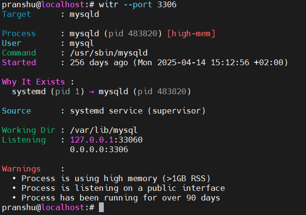
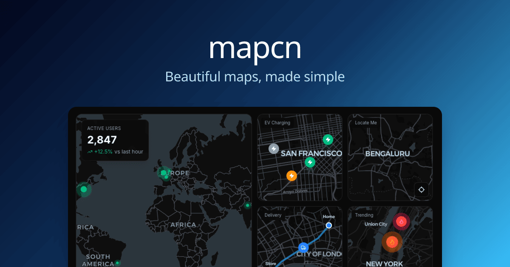
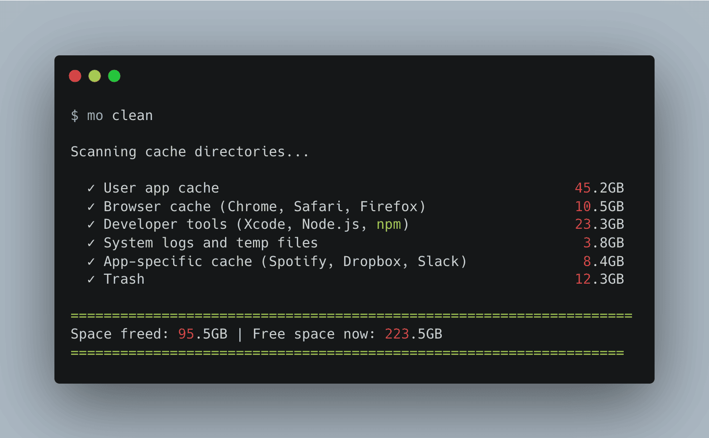
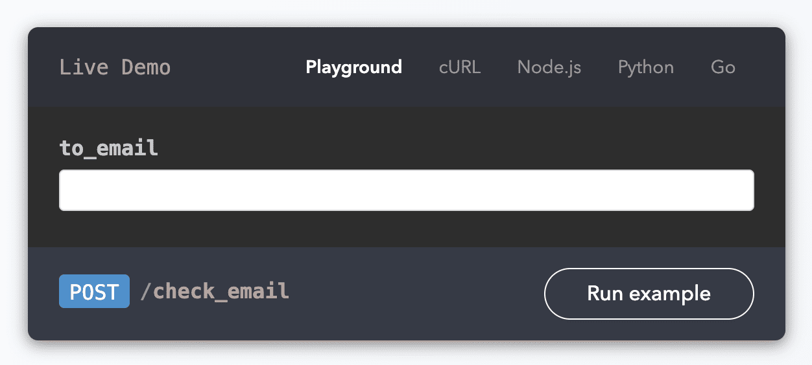
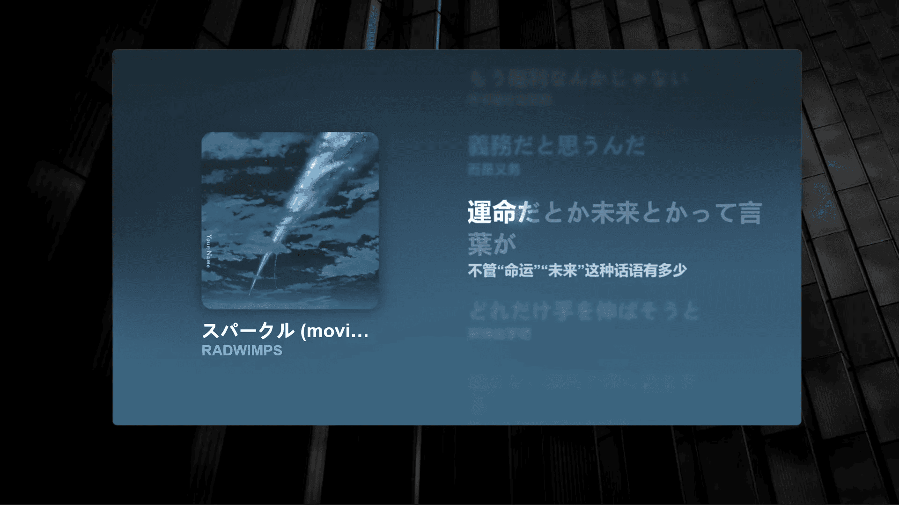

2026 年的第一期「GitHub 热点速览」准时上线！新的一年，让我们看看开源社区迎来了哪些有趣、好玩的开源项目。
如果你受够了不明真相的后台进程，不妨试试 witr，一条命令就能把进程查个底朝天。刚开年想给你的 Mac 瘦瘦身？极简清理工具 Mole 既轻量又方便。对于正在使用 AI 编程的朋友，ui-ux-pro-max-skill 能让你的 AI 助手秒变资深 UI 设计师，告别千篇一律、AI 味儿十足的界面。哈佛大学开源的 AI 系统工程课程，带你从零手搓深度学习框架 TinyTorch。
学累了？不妨试试这款被网友直接“封神”的沉浸式桌面歌词工具 BetterLyrics，享受一会儿沉浸式听歌的快乐，劳逸结合才能更好地出发。
· 本文目录
· 1\. 热门开源项目
· 1.1 一条命令揭秘进程身世：witr
· 1.2 开箱即用的地图组件库：mapcn
· 1.3 极简的 macOS 系统清理工具：Mole
· 1.4 AI 编程助手的设计增强插件：ui-ux-pro-max-skill
· 1.5 机器学习系统工程：cs249r_book
· 2\. HelloGitHub 热评
· 2.1 无需发邮件验证邮箱有效性的工具：check-if-email-exists
· 2.2 沉浸式桌面歌词显示工具：BetterLyrics
· 3\. 结尾
1. 热门开源项目
1.1 一条命令揭秘进程身世：witr

主语言：Go，Star：9.9k，周增长：7.4k
这是一个用 Go 编写的命令行诊断工具，用于快速定位和分析正在运行的进程。它通过端口、服务名或 PID 映射进程信息，生成通俗易懂的进程因果链，直观展示进程的来源、启动方式和持续运行的原因，帮助运维与开发者排查和定位异常进程。
GitHub 地址→github.com/pranshuparmar/witr
1.2 开箱即用的地图组件库：mapcn

主语言：TypeScript，Star：3k，周增长：3k
该项目是基于 MapLibre GL 和 Tailwind CSS 构建的交互式地图组件，开箱即用无需配置，能够自动适配浅色和深色模式，支持缩放、指南针、定位、标记、弹框和绘制路线等功能，兼容 shadcn/ui 适合 React 生态的开发者。
import { Map } from "@/components/ui/map";
export function BasicMapExample() {
return (
<div className="h-[400px] w-full">
<Map center={[-74.006, 40.7128]} zoom={12} />
</div>
);
}
GitHub 地址→github.com/AnmolSaini16/mapcn
1.3 极简的 macOS 系统清理工具：Mole

主语言：Shell、Go，Star：25k，周增长：1.6k
这是一款专为 macOS 设计的轻量级命令行清理工具，集深度清理、应用卸载、硬盘空间分析和实时状态监控于一体。它主要由 shell 编写，安装简单、零干扰（无广告/弹窗/常驻进程），支持白名单和试运行模式，进一步降低误删风险。
GitHub 地址→github.com/tw93/Mole
1.4 AI 编程助手的设计增强插件：ui-ux-pro-max-skill
主语言：TypeScript，Star：6.8k，周增长：4.3k
这是一款面向 AI 编程助手的 UI/UX 设计增强插件，赋予 AI 助手生成专业级界面和用户体验的能力。它内置 57 种 UI 风格、95 套调色方案、56 组字体搭配和 98 条 UX 最佳实践规范的知识库，让 AI 摆脱千篇一律的通用样式代码，自动生成具有较高水准视觉效果和良好交互体验的应用界面代码。
# Install CLI globally
npm install -g uipro-cli
# Go to your project
cd /path/to/your/project
# Install for your AI assistant
uipro init --ai claude # Claude Code
uipro init --ai cursor # Cursor
uipro init --ai windsurf # Windsurf
uipro init --ai antigravity # Antigravity (.agent + .shared)
uipro init --ai copilot # GitHub Copilot
uipro init --ai kiro # Kiro
uipro init --ai all # All assistants
GitHub 地址→github.com/nextlevelbuilder/ui-ux-pro-max-skill
1.5 机器学习系统工程：cs249r_book
主语言：Other，Star：15k，周增长：3k
该项目是由哈佛大学开源的 AI 系统工程（CS249r）课程教材，内含书籍和源码。它通过从零实现深度学习框架 TinyTorch 和将模型部署到 Arduino 与树莓派等硬件设备的实践，帮助学习者将机器学习理论与系统工程实践相结合，掌握在实际嵌入式开发中部署 AI 系统的方法。
GitHub 地址→github.com/harvard-edge/cs249r_book
2. HelloGitHub 热评
在此章节中，我们将为大家介绍本周 HelloGitHub 网站上的热门开源项目，希望你能从中收获开源神器和编程知识，更欢迎与我们分享你在使用这些开源项目的体验和评价，用最真实反馈为开源项目的作者提供动力。
2.1 无需发邮件验证邮箱有效性的工具：check-if-email-exists

主语言：Rust
这是一款用 Rust 开发的邮箱验证工具，通过正则表达式、DNS、SMTP 等多重校验，在不发送邮件的情况下验证邮箱有效性，支持 API 和 CLI 等使用方式。
项目详情→hellogithub.com/repository/reacherhq/check-if-email-exists
2.2 沉浸式桌面歌词显示工具：BetterLyrics

主语言：C#
这是一款专为 Windows 设计的沉浸式歌词显示工具，能够自动识别播放器正在播放的音乐，实时检索本地或在线歌词，并通过流畅动画美观地展示在桌面上。
项目详情→hellogithub.com/repository/jayfunc/BetterLyrics
3. 结尾
以上就是本期「GitHub 热点速览」的全部内容，我始终坚信：兴趣是最好的老师！希望这些开源项目能激发你的兴趣，让你找到下一个想尝试和学习的开源项目。如果你也发现了好玩、有趣的 GitHub 开源项目想要分享，欢迎来 HelloGitHub 与我们交流、讨论使用体验。
往期回顾
· 上班摸鱼玩塔防，竟然是为了学架构？
· 节省 60% Token 的新数据格式